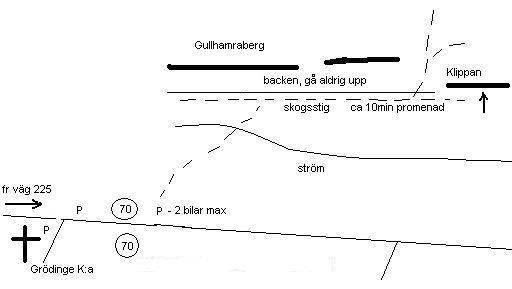
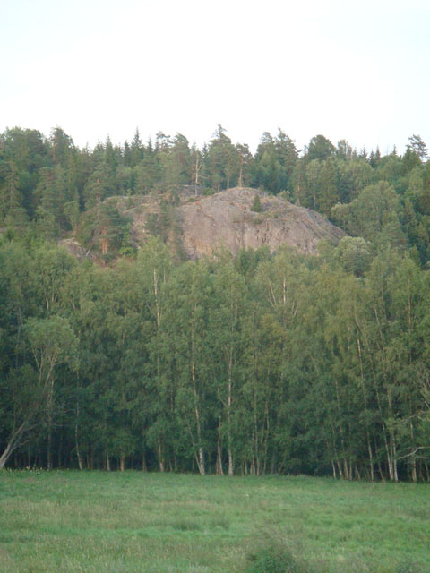
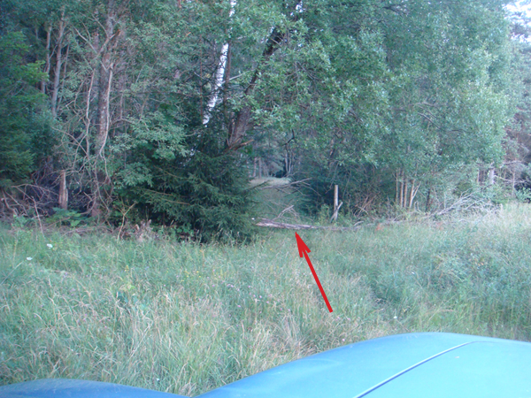
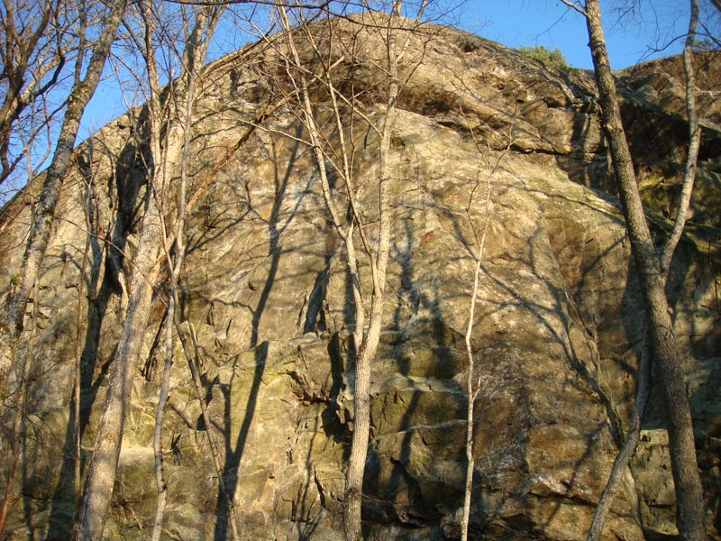

GPS: 59.13733605990039,17.78939723968506
Nyutvecklad sportklippa nära Grödinge kyrka. Gullhamra är ett stort berg som har flera mer eller mindre kompakta väggpartier på den branta västsidan. Längst åt söder ligger det mest sammanhängande och klippliknande väggpartiet. Det är mer än hundra meter brett men delvis ganska löst. Vägghöjd varierar mellan 15 och 20m. Idag finns det någon femton helbultade sportleder och flera nya projekt är på gång. Klättringen varierar från lättare vertikal till hårda branta delar och små tak.
Klippan är solvänd men delvis skuggad av lövträd, vilket borde innebära att de går att klättra på från tidig vår till sen höst. En våtmark ligger ett stenkast från klippan. Under sommaren kan det vara ganska rejält med mygg. Glöm inte myggmedel. Det finns massor med vildsvin i området. Ta det lugnt och försiktigt.
Från Tumba kör Dalvägen (väg 226) mot Vårsta ca 4km. Kör genom Vårsta och ta vänster in på väg 225 mot Nynäshamn. Efter 1.8km sväng höger mot Skanssundet och Grödinge k:a. Efter 2.5km passeras kykan. Försätt ca 200m till 70-skyltar. Precis efter skyltarna finns det en liten plätt på vänster sidan. Där kan man parkera två eller tre bilar max. I alt finns det en stor parkering vid kyrkan. Buss 727 från Tumba station mot Skanssundet stannar vid Grödinge kyrka. Restid ca 15min.
  Riktig start från parkering.
Klippan dyker upp från marknivå och på sina ställen är ganska hög och imponerande. Det finns då flera mindre eller större hyllor som man måste klättra förbi. Därför känns några leder effektivt kortare men också brantare än väntat. Det finns en hel del riktigt vassa grepp och kanter. Klippkvalitén är varierande och bitvis ganska ful, men i princip är det något bättre än man tror. Alla leder är helbultade och väldigt mycket lösa block och sten har rensats bort. Det är fortfarande inte ovanligt att ett och annat grepp kan lossna så den försiktige säkraren har på sig hjälm. Att ledklättra på oklara/stängda projekt kan vara rent livsfarligt!
Det finns ett toppankare på varje led. Alla leder är helbultade.
Det kan vara klokt att undvika det
stora block/flak
emellan led nr 4 och 5. {| |- valign="top" | width="350px" |
Accessläget vid Gullhamra berg är oklart. Håll låg profil tills mer information finns tillgänglig.
Kategori:Stockholm
Kategori:Västra Södertörn
Kategori:Saknar leder
Kategori:Saknar skiss
Kategori:sport
Kategori:vertikalt
Kategori:överhäng
Kategori:sva
Copyright (C) Permission is granted to copy, distribute and/or modify this document under the terms of the GNU Free Documentation License, Version 1.3